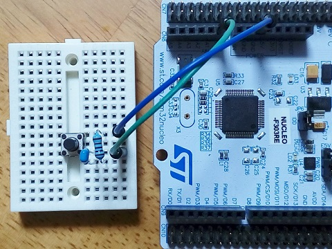
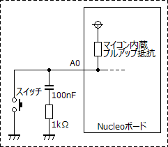
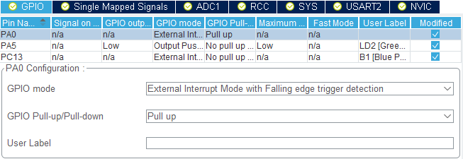
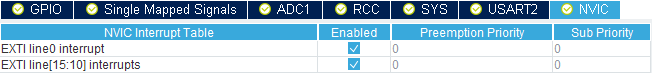

STM32 Nucleoボード スイッチ割り込み
2018年12月18日 カテゴリー：STM32

AVRマイコンでのスイッチ処理は、今までメインループの中で行っていました（→MOSリレーバイパス）。しかしながらメインループでは別の処理をしたい場合が出てくると思われるので、割り込みを使ってみます。
スイッチが押されたときに指定した割り込み処理が起きるわけですが、スイッチのチャタリングにより割り込みが何度も発生してしまうことになります。今回は対策が楽なハードウェア（抵抗とコンデンサ）によるチャタリング除去を行うことにしました。テストとしてボード上のLEDの点滅速度をスイッチにより変更します。
Nucleoボードにはすでに青いスイッチが付いており、さらにもう一つタクトスイッチを下図の通り接続します。コンデンサに直列に抵抗を入れるのはあまり見かけませんが、Nucleoボード上の青いスイッチ周辺に採用されていました。

＜STM32CubeMX（5.0.0） Pinout & Configurationタブ＞
右側IC画像
14番ピン（PA0）にGPIO_EXTI0を設定
2番ピン（PC13）がデフォルトでGPIO_EXTI13に設定済
21番ピン（PA5）がデフォルトでGPIO_Outputに設定済
左側列のSystem Core→GPIOを開く
・中央列下側 Configuration→GPIOタブ

PA0 GPIO mode : External Interrupt Mode with Falling edge trigger detection
PA0 GPIO Pull-up/Pull-down : Pull up
・中央列下側 Configuration→NVICタブ

EXTI line0 interrupt : Enabledにチェックを入れる
EXTI line[15:10] interrupts : Enabledにチェックを入れる
＜TrueSTUDIO（9.1.0）＞
main.cに3箇所追加記載する
/* USER CODE BEGIN 0 */の下 変数（LED点滅間隔時間）を定義
volatile uint16_t interval = 200;
/* USER CODE BEGIN 3 */の下 LED点滅
HAL_GPIO_TogglePin(GPIOA, GPIO_PIN_5);
HAL_Delay(interval);
/* USER CODE BEGIN 4 */の下 スイッチによりLED点滅間隔時間を変更
void HAL_GPIO_EXTI_Callback(uint16_t GPIO_Pin) {
if (GPIO_Pin == GPIO_PIN_13) interval = 2 * interval;
if (GPIO_Pin == GPIO_PIN_0) interval = interval / 2;
}
＜参考ページ＞
割り込みを使う - DSP空挺団
（ハードウェア以外でのチャタリング対策）
割り込み処理 -第3回：チャタリング防止 - Arduinoで遊ぶブログ
マイコンにおけるチャタリング＆ノイズ対策 - 味わい尽くせ！